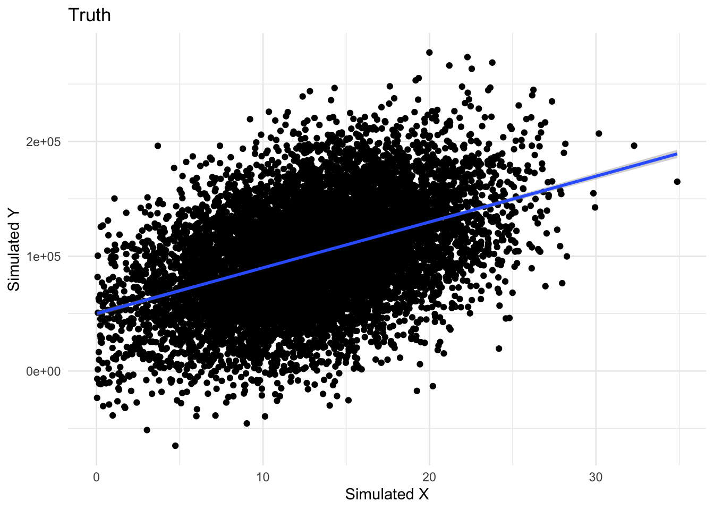
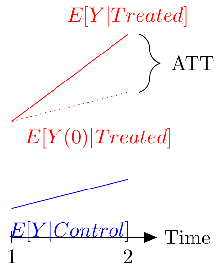
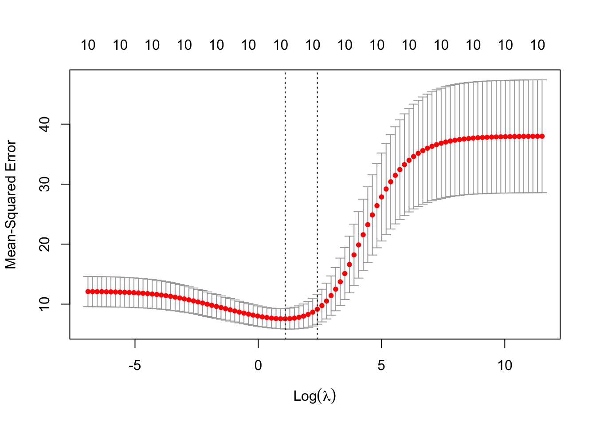
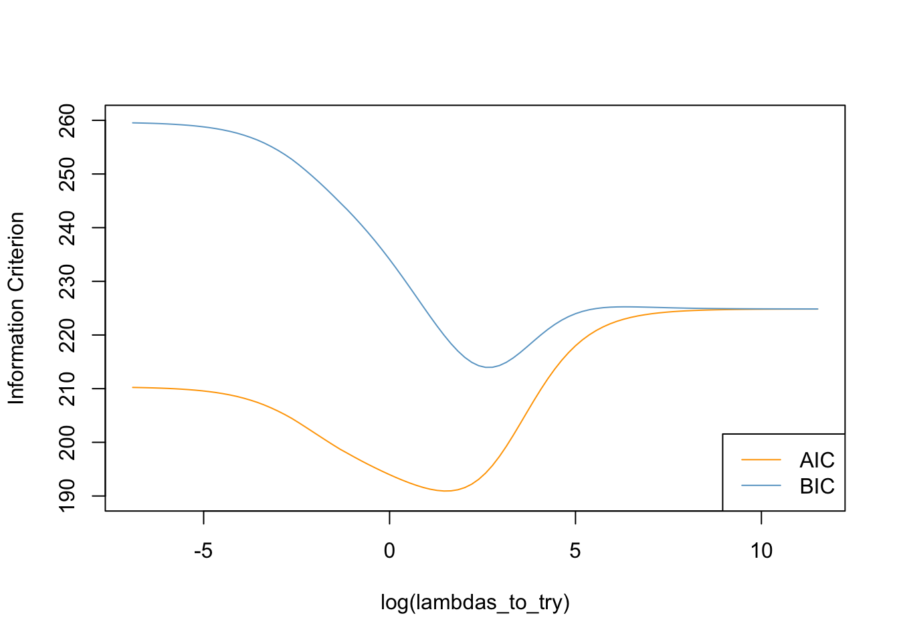
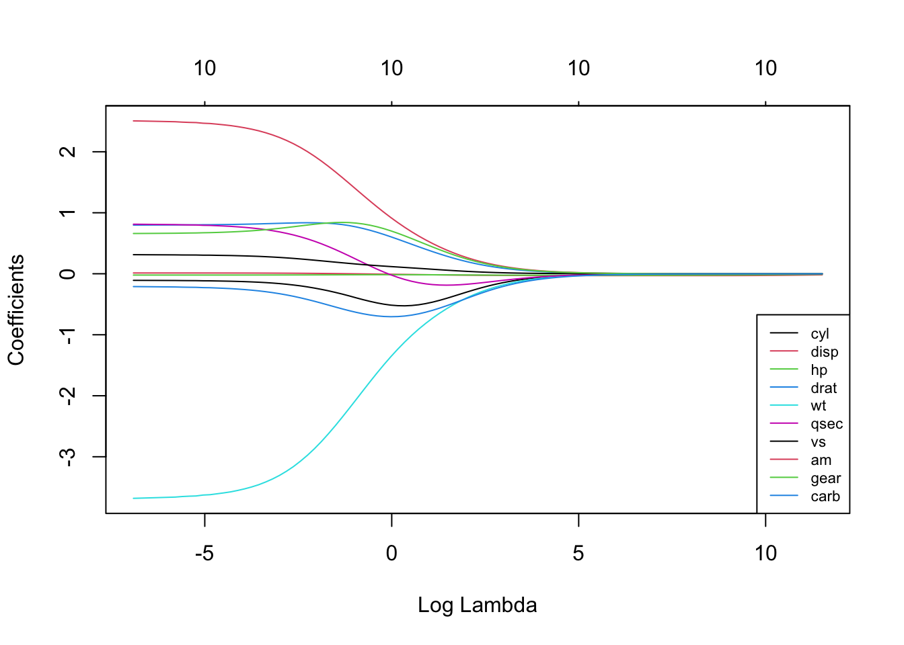

Get summary stats for the variables. Check for outliers or weird patterns
Plot the independent variables against the dependent variable. Same goal as above.
Figure out the model and standard errors - you most likely want robust or cluster robust standard errors
Run the regression. If you have over 5 fixed effects (FEs), you can use a couple of approaches - if you don’t care about the FEs themselves, demean the dependent and independent variable of interest by group (i.e. \(y_{\text{demeaned}}=\alpha + \beta_1 x_\text{1 demeaned} + \beta_2 x_\text{2 demeaned}\)) , or use plm or some other package
Check regression diagnostics
Residuals vs Fitted - checks linear relationship assumption of linear regression. A linear relationship will demonstrate a horizontal red line here. Deviations from a horizontal line suggest nonlinearity and that a different approach may be necessary.
Normal Q-Q - checks whether or not the residuals (the difference between the observed and predicted values) from the model are normally distributed. The best fit models points fall along the dashed line on the plot. Deviation from this line suggests that a different analytical approach may be required.
Scale-Location - checks the homoscedasticity of the model. A horizontal red line with points equally spread out indicates a well-fit model. A non-horizontal line or points that cluster together suggests that your data are not homoscedastic.
Residuals vs Leverage - helps to identify outlier or extreme values that may disproportionately affect the model’s results. Their inclusion or exclusion from the analysis may affect the results of the analysis. Note that the top three most extreme values are identified with numbers next to the points in all four plots. You can also do this using the The Hat Matrix!
A one unit increase in x, increases y by coefficient (\(\beta\)) units
No logged DV, logged IV
Divide the coefficient by 100, this tells us that a 1% increase in the independent variable increases (decreases) the dependent variable by coefficient/100 units . For an 10% increase multiply the coefficient by log(1.1) (for x increase log(1.x)). Suppose our coefficient is 5. The interpretation is that a one percent increase in x increases the dependent variable by 0.05. For every 10% increase in the independent variable, the dependent variable increases by 5 * log(1.1) = 0.47
Logged DV, No logged IV
Exponentiate the coefficient, subtract one from this number, and multiply by 100. This gives the percent increase (or decrease) in the y for every one-unit increase in the independent variable. exp(coef) – 1) * 100. Suppose your coefficient is 0.5, (exp(0.5)-1)*100 = 64.9, a one unit increase in your independent variable increases your dependent variably by 64.9%. If our coefficient were 5, the result would be 14,741.32%. This is unlikely!
Logged DV, logged IV
Interpret the coefficient as the percent increase in the dependent variable for every 1% increase in the independent variable. Suppose the coefficient is, again, 5. For every 1% increase in the independent variable, the dependent variable increases by 5%. Suppose, instead, we wanted an x percent increase - use the formula \((1.x^5 – 1) * 100\). For example, a 10% increase in our independent variable increases our dependent variable by \((1.1^5 - 1) * 100 = 61.05\%\)
# plot variables against DV to check for weirdnesssim_data %>%gather(key ="other_variable", value ="value",-y) %>%ggplot(., aes(x = value, y = y)) +geom_point() +facet_wrap(~other_variable)+scale_color_viridis_d() +labs(caption ="Check that each x is linearly related to the y")
# model, can also do cluster robuststd <-lm(y ~ x1 + x2)robust <- estimatr::lm_robust(y ~ x1+x2)# Output the diagnostic plots. Look for weirdness (won't find it here because we're in a nice simualted sandbox)residvfitted <- ggplot2::autoplot(std, which =c(1)) +labs(caption ="Residuals vs Fitted - checks linear relationship assumption of linear regression. A linear relationship will demonstrate a horizontal red line here. Deviations from a horizontal line suggest nonlinearity and that a different approach may be necessary.")qq <- ggplot2::autoplot(std, which =c(2)) +labs(caption ="Normal Q-Q - checks whether or not the residuals (the difference between the observed and predicted values) from the model are normally distributed. The best fit models points fall along the dashed line on the plot. Deviation from this line suggests that a different analytical approach may be required.")scalevlocation <- ggplot2::autoplot(std, which =c(3)) +labs(caption =" Scale-Location - checks the homoscedasticity of the model. A horizontal red line with points equally spread out indicates a well-fit model. A non-horizontal line or points that cluster together suggests that your data are not homoscedastic.")residvleeverage <- ggplot2::autoplot(std, which =c(4)) +labs(caption ="Residuals vs Leverage - helps to identify outlier or extreme values that may disproportionately affect the model's results. Their inclusion or exclusion from the analysis may affect the results of the analysis. Note that the top three most extreme values are identified with numbers next to the points in all four plots. You can also do this using the [The Hat Matrix!]")residvfitted + qq
scalevlocation + residvleeverage
# Lots of diagnostic options, see https://declaredesign.org/r/estimatr/articles/estimatr-in-the-tidyverse.html# Model Summary for the outputmodelsummary::modelsummary(std)
(1)
(Intercept)
5.334
(1.391)
x1
1.004
(0.064)
x2
1.000
(0.031)
Num.Obs.
1000
R2
0.556
R2 Adj.
0.555
AIC
7478.8
BIC
7498.4
Log.Lik.
−3735.405
F
624.570
RMSE
10.14
modelsummary::modelsummary(robust)
(1)
(Intercept)
5.334
(1.421)
x1
1.004
(0.062)
x2
1.000
(0.032)
Num.Obs.
1000
R2
0.556
R2 Adj.
0.555
AIC
7478.8
BIC
7498.4
RMSE
10.14
Resources
These are the sources I used to create this!
Less Math Heavy or Math Heavy with Intuitive Explanations
There are a lot of ways to implement Ordinary Least Squares (Before we do, note that ordinary means that all observations are treated equally. If we don’t want to do that, we can use weighted least squares or WLS.)
This guide covers OLS via:
Linear Algebra
Method of Moments
Maximum Likelihood
Gradient Descent (See Gradient Descent Guide for more details)
Remember: OLS is an estimator - it’s a machine that we plug data into and we get out estimates. As long as there is variation in our x, we get estimates (regardless of whether they make sense!).
We use it because we care about the relationship between an outcome, an independent variable of interest, while controlling for various factors. That is, the correlation cov(x,y) / \(\sigma_x \sigma_y\) doesn’t capture the relationship we care about because there may be confounding (i.e. a common cause).
Our Goals/Terms
Goals
There are a few different ways to describe the goals of social science research:
Our goal is to learn about the data generating process that generated the sample (Brandon Stewart). Another way DGP are also described as real world process(es) that creates/generates the data we’re interested in. In other words, the DGP describes the rules that created variation in the population itself and in our data. DGPs are usually unknown, unless you’re simulating.
The goal of quantitative social science is not limited to uncovering causally identified facts; the goal is to harness (many) pieces of evidence to obtain an inference to the best explanation—both within and across studies. (Stewart and Spirling)
The goal of statistical inference is to learn about the unobserved population distribution, which can be characterized by parameters. We want to estimate these population parameters. (What is a parameter? It’s a particular aspect of a population distribution)
Note that sometimes the unobserved population distribution and the DGP are sometimes considered the same. Matt Blackwell and Brandon Stewart, for example, sometimes call the population distribution the data generating process (DGP).
Terms
Estimands are the parameters that we aim to estimate (in other words “the estimand is the object of inquiry—it is the precise quantity about which we marshal data to draw an inference”). These are often written in Greek letters. Think of these as the truth. They are the result of the true data generating process.
Estimators are functions of sample data (i.e. statistics/rules) which we use to learn about the estimands. They are often written using modified Greek letters (e.g., \(\hat{\beta}\)). These are procedures (e.g. means, variances, OLS). In concrete terms, Ordinary Least Squares is an estimator of some estimand, which was created by some data generating process (DGP).
Estimates are particular values of estimators realized in a given sample. They are denoted by English letters (e.g., X, \(x_i\)) and are data from our sample. For example, the mean wealth of a person who completes college may be an estimate we care about.
Note that, theoretically, estimate = estimand + bias + noise (see e.g. Fowler and Bueno de Mesquita’s book). Where bias is a systematic error and noise is an idiosyncratic one that is particular to any observation. So our population estimate is a function of the true estimand, systematic bias, and irreducible noise. Our goal is for the bias to be as close to 0 as possible. This, however, is hard!
DGP \(\rightarrow\) Sample \(\rightarrow\) DGP
Putting this together:
(Unobserved) There is a data-generating process that creates the data/parameters we care about. E.g., some people get cancer because of a mutation, candidates for office spend money strategically to win elections, lobbyists argue that policy should change, etc… These processes create data that we’re interested in such as cancer rates/election spending/lobbying results
We decide to care about a population parameter - the estimand - the true effect of an intervention (e.g. the true effect of a cancer drug on mortality or the true effect of spending on campaign outcomes). ``Each theoretical estimand is linked to an empirical estimand involving only observable quantities (e.g. a difference in means in a population) by assumptions about the relationship between the data we observe and the data we do not… The distinction between the theoretical and empirical estimands is subtle but important: the former may involve unobservable quantities such as counterfactuals while the latter involves only observable data.”
We then gather a sample of the population (or, maybe the whole population itself but then we say this population is a realization of a super-population), and measure the effect of this intervention on that sample. Say gather 1000 cancer patients or all congressional elections from 2000 - 2022.
Once we have sample, we select an estimator (e.g. mean, regression, etc…), which we use to learn about the estimand. Particular values of the estimator are estimates (e.g., population mean).
If we’ve done this well, we’re able to use our sample to talk about the population.
So we have: data \(\rightarrow\) calculation \(\rightarrow\) estimate \(\rightarrow\) (maybe) truth
What Good is a Regression? paper by Spirling and Stweart
OLS Big Picture
Regression provides the best linear predictor for the dependent variable in the same way that the conditional expectation function (CEF) is the best unrestricted predictor of the dependent variable
If we prefer to think of approximating \(E(y_i|x_i)\) as opposed to predicting \(y_i\), even if the CEF is nonlinear, regression provides the best linear approximation to it (Angrist and Pischke)
If the CEF is linear (i.e. if the process that produces the population distribution is linear), then it makes the most sense to use linear regression to estimate it. Restated, the population regression function is the best we can do in the class of all linear functions to approximate \(E(y_i|x_i)\) (Angrist and Pischke)
Linear regression may be interesting even if the underlying CEF is not linear. \(E(y_i|x_i)\), is the minimum mean squared error predictor of \(y_i\) given \(x_i\) in the class of all functions of \(x_i\) (Angrist and Pischke)
\(\beta_{OLS}\) is an estimator of a parameter we do not observe
The standard error is the standard deviation of the estimator
A confidence interval is an interval where we know with some probability the true estimate lives
A p-value is the largest probability of obtaining results at least as extreme as those actually observed, under the assumption that the null hypothesis is correct.
Regression anatomy helps us understand OLS as a “matching estimator” (try to compare observations that are alike in the Xs). (Note that this comes from MHE’s regression anatomy theorem. Suppose you have a multivariate regression \(Y_i = \beta_0 +\beta_1X_{1i}+\beta_2X_{2i}+\epsilon_i\) and two auxillary regressions of \(X_{1i}\) on \(X_{2i}\), and vice versa. The regression anatomy theorem states that \(\beta_1\) captures the effect of \(\tilde{x}_{1i}\) (the residuals from the regression of \(X_{1i}\) on \(X_{2i}\)) - the part of \(X_{1i}\) not explained by \(X_2\).). Similarly \(\beta_2\) captures the effect of \(\tilde{x}_{2i}\) (the residuals from the regression of \(X_{2i}\) on \(X_{ii}\)) - the part of \(X_{2i}\) not explained by \(X_1\).)
Short answer: unless you have some exogenous variation or randomization, the answer is no.
Sekhon: “Without an experiment, a natural experiment, a discontinuity, or some other strong design, no amount of econometric or statistical modeling can make the move from correlation to causation persuasive. (Sekhon, 2009, p. 503)
Angrist and Pischke: Regression is causal when the corresponding conditional expectation function (CEF) is causal. If, for example \(Y_i\) is fall grades and \(D_i\) is a treatment dummy indicating students receiving randomized GPA incentives, then \(E[Y_i|D_i,Wi]\) has a causal interpretation, revealing differences in average potential GPAs indexed by \(D_i\), conditional on control variables, \(W_i\). The regression of \(Y_i\) on \(D_i\) and \(W_i\) inherits this CEFs causal interpretation
At the end of the day, OLS (and other matching/weighting estimators) “mop up” imbalances that makes CIA plausible
Thought experiment necessary to test CIA:
How could it be that two units that are identical with respect to all meaningful background factors nonetheless receive different treatment?
Your answer to this question is your source of identification
This is the method used in Scott Cunningham’s Causal Inference Mixtape and Angrist and Pischke’s Mostly Harmless Econometrics.
Think of the population regression as a moment of the population distribution. This proceeds in two steps:
First we derive an estimator for the population regression coefficient
Then we replace it with the sample analog.
Let’s assume that the data generating process in the sky follows the following form:
\[ y_i = \beta_0 + \beta_1x_i + u_i\] That is, every y is a function of an intercept \(\beta_0\), a coefficient \(\beta_1\) on \(x_i\) and a random error \(u_i\). To make it concrete, assume that your earnings at age 40 are only systematically determined by your education and some random error \(u_i\). So nothing else matters systematically. That is, majoring in electrical engineering has the exact same returns as majoring in underwater basket weaving if they both take four years to complete. Except for a random error (e.g., sometimes electrical engineers decide to live as artists). This is a very strong assumption because we have to believe that everyone’s ability is the same.
How do we go from the above to a regression?
We need two assumptions, laid out below:
We need to assume \(E(u_i)=0\). That is, the expected value of any error term is 0. This doesn’t mean that every error term is 0 for each i. Quite the contrary! Some errors are positive, some are negative, but the mean of the distribution is 0.
We also need to assume \(E(u_i|x_i)=E(u_i)\) This assumption - mean independence - that states that the disturbances average out to 0 for any value of X. Put differently, no observations of the independent variables convey any information about the expected value of the disturbance.
This implies that: \(E(u_i | x_i)=E(u_i)=0\) and \(E(u_ix_i)=E(E(u_i|x_i))=0\). From these we can derive the population regression coefficients.
At a population level:
\[E[Y|X] = \beta_0 + \beta_1x_i\]\(E[Y|X]\) is a population level regression function or conditional expectation function (i.e. mean). We solve for \(\beta_0\) and \(\beta_1\)
Solving for \(\beta_0\)
\[E[u_i|x_i] = E[y_i-\beta_0-\beta_1x_i] = 0\]\[E[y_i]-\beta_0-E[\beta_1x_i] = 0\] Above, note that \(\beta_0\) is a constant so \(E[\beta_0]=\beta_0\)
\[E[y_i]-\beta_1 E[x_i] = \beta_0\] Now do \(\beta_1\):
\[E[u_ix_i] = 0 \] Replace \(u_i\) with \(y-\beta_0-\beta_1x_i\). A note about this proof - be careful with expectations and with minus signs
\[E[(y_i-\beta_0-\beta_1x_i)x_i] = 0 \] We note \(x_i\) is a scaler, so we can move it to the front.
\[E [x_i(y_i-\beta_0-\beta_1 x_i)]= 0 \] Now replace \(\beta_0\) with what we derived above \(E[y_i]-\beta_1 E[x_i] = \beta_0\)
Remember that since the term is \(-\beta_1\) we need to distribute the minus!
\[E[x_i(y_i - E[y_i] - \beta_1 x_i + \beta_1 E[x_i]) ] = 0 \] Factor out \(\beta_1\). Watch the minus sign on the \(E[x_i]\)!
\[E[x_i(y_i - E[y_i] - \beta_1 (x_i - E[x_i])) ] = 0 \]\[E[x_i(y_i - E[y_i])] = \beta_1 E [x_i (x_i - E[x_i]) ] \] On the right hand side, we note that \(E[(x_i - E[x_i])^2] = E[x_i^2 - E[x]^2]\). Given that this took me a few hours to figure out, here’s the proof. Note that we start with \(E[(x_i - E[x_i])^2] = E[x_i^2 - 2 x_i E[x_i]-E[x_i]^2]\). Now we distribute the expectations to all the terms. \(E[x_i^2] - E[2 x_i E[x_i]]+E[E[x_i]^2]]\). Now clean up the expectations. \(E[x_i^2] - 2 E[ x_i^2 ]+E[x_i]^2 = E[x_i^2]-E[x_i]^2 = E[(x_i-E[x_i])(x_i-E[x_i])]\)
\[E[x_i(y_i - E[y_i])] = \beta_1 E[(x_i-E[x_i])(x_i-E[x_i])] \] Note that we can do the same thing to the left hand side too. So \(E[x_i(y_i - E[y_i])] = E[(x_i-E[x_i])(y_i-E[y_i])]\)
Now, putting it all together:
\[\frac{E[(x_i-E[x_i])(y_i-E[y_i])]}{E[(x_i-E[x_i])(x_i-E[x_i])]} = \beta_1 \]\[\frac{\text{population covariance}}{\text{population variance }} = \beta_1 \] But! we don’t have the population x or y or E[x] or E[y]. So we have to use the sample analogs.
\[\frac{1}{N}\sum_{i=1}^N [Y_i - \hat{\beta}_0-\hat{\beta}_1 X_i] = 0 \] and
In this section we derive the OLS model using linear algebra. Before getting into the derivatives, note the properties of transposes and matrix derivatives necessary to do this in the section below.
Preliminaries
X is an \(x \times k + 1\) matrix with k variables and n observations. The plus 1 means we have an intercept as denoted by a vector of ones in the X matrix. This means \(X'\) or \(X^T\) is \((k + 1) \times n\)
e/u are \(n \times 1\) vectors
y is an \(n \times 1\) vector
\(\beta\) is an \(n \times 1\) vector
A and B are matrices, a and b are vectors
n is the number of observations, k is the number of predictors
\(y_i\) denotes the i’th value of \(y\)
Matrix Transpose and Derivative Rules
Transpose rules:
(AB)’ = B’A’
(a’Bc)’ = c’B’a
a’b = b’a - (A + B)C = AC + BC
(a + b)’C = a’C + b’C
\(AB \neq BA\)
Derivative rules for taking the derivative with respect to X
Note above that \(y'\) is \(1 \times n\). So \(y'X\hat{\beta}\) is \((1 \times n) (k \times n) (n \times 1)\) also \(\hat{\beta}'X'y\) is \((1 \times k) (k \times n) (n \times 1) \rightarrow 1 \times 1\). We choose \(\hat{\beta}'X'y\) to make the final step of the proof work. (We could also rearrange because X’y = y’X)
\[ = y'y - 2 \hat{\beta}'X'y + \hat{\beta}'X'X\hat{\beta} \] We minimize this quantity by taking the partial derivative with respect to \(\hat{\beta}\) and setting it equal to 0 and solving for \(\hat{\beta}\)
Assume that \(\epsilon_i \sim N(0,\sigma^2)\). That means we know that \(y_i \sim N(\hat{b}'x_i,\sigma^2)\)
We start with the joint distribution of \(y_1,y_2,y_3 \dots y_n\)
\[P(y|X,b,\sigma^2) = \prod_{i=1}^nf(y_i;X,b,\sigma^2) \]\[P(y|X,b,\sigma^2) = \prod_{i=1}^n \frac{1}{\sigma^2 \sqrt{2 \pi} } \text{exp}(-\frac{1}{2\sigma^2}(y_i-b'x_i)^2) \] Distribute the \(\prod\) to the exponent, but remember that it replicates the constant \(\frac{1}{2\pi\sigma^2}\)\(c^n\) times where c is the constant and n are the number of replications of the product notation.
\[l = -\frac{n}{2}\ln(2\pi\sigma^2)-\frac{1}{2\sigma^2}\sum_{i=1}^n(y_i-b'x_i)^2 \] Here’s a neat little step - replace the row-notation above with matrix notation.
\[\ln l = -\frac{n}{2}\ln(2\pi\sigma^2)-\frac{1}{2\sigma^2} (\textbf{y}-\textbf{Xb})'(\textbf{y}-\textbf{Xb}) \]
Now we have an expression for the log likelihood - so we want to … maximize it (i.e. for maximum likelihood!). What we’re going to do in a few steps is take the partial derivative with respect to b (i.e. \(\frac{\partial l}{\partial b}\)) and set the whole thing to 0. This means that, at this point, we don’t care about terms that don’t have a b in them. I.e. the first term \(-\frac{n}{2}\ln(2\pi\sigma^2)\) does not have a b in it at all, so we can just call that \(c\).
\[\ln l = c - \frac{1}{2\sigma^2} (\textbf{y}-\textbf{Xb})'(\textbf{y}-\textbf{Xb}) \]\[\ln l = c - \frac{1}{2\sigma^2} (\textbf{y'y} + \textbf{b'X'Xb} - \textbf{2b'X'y}) \] Now do the partial derivative and set them equal to 0.
\[ \frac{\partial l}{\partial b} \rightarrow 2\textbf{X'Xb} = \textbf{2X'y} \]\[\hat{\textbf{b}}_{ML} = (\textbf{X'X})^{-1}\textbf{X'y}\] To get the variance - take the partial with respect to \(\sigma\)
The following objects are masked from 'package:base':
as.Date, as.Date.numeric
library(sandwich)library(sjPlot)#DGP for xa <-50000x <-abs(rnorm(10000,mean =13, sd =5))b <-4000u <-rnorm(10000, mean =0, sd =40000)y <- a + b * x + uDGP <-tibble(x = x, y = y )ggplot(DGP, aes(x=x, y=y)) +geom_point() +theme_minimal() +labs(title ="Truth",x ="Simulated X",y ="Simulated Y", ) +stat_smooth(method ="lm", formula = y ~ x, geom ="smooth")

# Method of moments cov(x, y) /var(x)
[1] 3991.188
# Linear Algebra x_mat <-as.matrix(cbind(1, x)) # remember to add column of ones!solve( (t(x_mat) %*% x_mat) ) %*% (t(x_mat) %*% y)
[,1]
49988.649
x 3991.188
# MLEloglikMLE <-function(par, y){ x =as.vector(x)sum(dnorm(y, mean = par[1] + par[2]*x, sd = par[3], log = T))}MLE <-optim(c(intercept =9000, x =400, sigma =1), fn = loglikMLE, #parameters to be estimated, function to optimisey =as.vector(y), control =list(fnscale =-1, reltol =1e-16)#we specify -1 in the controls so that we MAXIMIZE rather than minimize, which is the default )round(MLE$par,1)
intercept x sigma
49908.3 3997.4 40364.5
# Via Gradient Descent cost <-function(X, y, theta) {sum( (X %*% theta - y)^2 ) / (2*length(y))}#We must also set two additional parameters: learning rate and iteration limitalpha <-0.01num_iters <-10000# keep historycost_history <-double(num_iters)theta_history <-list(num_iters)# initialize coefficientstheta <-matrix(c(0,0), nrow=2)# add a column of 1's for the intercept coefficientX <-cbind(1, matrix(x))# gradient descentfor (i in1:num_iters) { error <- (X %*% theta - y) delta <-t(X) %*% error /length(y) theta <- theta - alpha * delta cost_history[i] <-cost(X, y, theta) theta_history[[i]] <- theta}gradient_descent_ols_estimates <- theta[,1] %>%tibble()# how close is this to truthest <-lm(y ~ x, DGP)truth_vec <-c(a, b)est$coefficients %>%tibble() %>% dplyr::bind_cols(truth_vec) %>% dplyr::bind_cols(c("a","b")) %>% dplyr::bind_cols(gradient_descent_ols_estimates) %>% dplyr::bind_cols(MLE$par[1:2]) %>%rename("OLS Estimate"=1, "Truth"=2, "Parameter"=3, "Gradient Descent"=4, "MLE"=5) %>%relocate(Parameter, .before =`OLS Estimate`) %>%relocate(Truth, .before =`OLS Estimate`)
New names:
• `` -> `...2`
New names:
New names:
New names:
• `` -> `...3`
# A tibble: 2 × 5
Parameter Truth `OLS Estimate` `Gradient Descent` MLE
<chr> <dbl> <dbl> <dbl> <dbl>
1 a 50000 49989. 49989. 49908.
2 b 4000 3991. 3991. 3997.
Variance of \(\beta\) - \(\sigma^2\)
We’ve shown how to derive the OLS model above using method of moments, linear algebra and maximum likelihood.
First a necessary (and, totally pedantic) note:
Errors/disturbances are the vertical distances between observations and the unknown Conditional Expectation Function. Therefore, they are unknown.
Residuals are the vertical distances between observations and the estimated regression function. Therefore, they are known.
If \(\hat{\beta}= (X'X)^{-1}X'y\) and \(y = X\beta + u\)
\[\hat{\beta} = (X'X)^{-1}X'(X\beta + u) = (X'X)^{-1}X'X\beta + (X'X)^{-1}X'u = I\beta + (X'X)^{-1}X'u\] Now take the variance of each side
\[V(\hat{\beta}|X) = V(\beta + (X'X)^{-1}X'u|X) \]\[V(\hat{\beta}|X) = V(\beta|X) + V((X'X)^{-1}X'u|X) \] In the above, note that \(V(\beta|X)=0\), since \(\beta\) is constant
To get to the next step, note that when A is a constant matrix and X is random, \(V(AX) = A V(X) A'\) and \(u = y - X\beta\). We’re not going to substitute in the \(u\) but point this out as to why it remains trapped in the variance operator
Note that \(V(u|X) = \sigma^2\) by the Gauss-Markov assumptions
So we’re left with:
\[V(\hat{\beta}|X) = (X'X)^{-1}X' \sigma^2 X(X'X)^{-1} = \sigma^2(X'X)^{-1} \] But we don’t have \(\sigma^2\) - that’s a population concept. So we estimate it with \(\hat{\sigma}^2=\frac{u'u}{n-k}\).
What does this look like?
It means, essentially, that the diagonals of the variance-covariance matrix, are the standard errors of \(\hat{\beta}\)
We can also start from Var(\(\hat{\beta}) = E[(\hat{\beta}-E[\beta])]^2\)
First, replace \(\hat{\beta}\) with \((X'X)^{-1}X'Y\)\[= E[(X'X)^{-1}X'Y - E[\beta]]^2 \] Now replace \(Y\) with \(X\beta + e\)\[= E[(X'X)^{-1}X'(X\beta + e) - E[\beta]]^2 \] We know that \(E[\beta] = \beta\), so make that sub \[= E[(X'X)^{-1}X'(X\beta + e) - \beta]^2 \] Do the multiplication \[= E[(X'X)^{-1}X'X\beta + (X'X)^{-1}X'e - \beta]^2 \] Recognize \((X'X)^{-1}X'X = I\)\[= E[I\beta + (X'X)^{-1}X'e - \beta]^2 \] We’ve added and subtracted a \(\beta\) so they cancel out \[= E[(X'X)^{-1}X'e]^2 \] Expand the square. Note that X is fixed so E(X)=X \[= ((X'X)^{-1}X'e )^ 2 \] Note that to square in matrix algebra we have to take the prime of the original term (i.e. XX is non-conformable unless X is square, but we can do XX’ and that would be an nkkn matrix or n*n)
\[= (X'X)^{-1}X'e e'X(X'X)^{-1} \]
Notice that we have \((X'X)^{-1}X'e e'X\)
\[= \sigma^2 I (X'X)^{-1} \]
From the last step take the square root of the diagonals to get the standard errors
We can use Huber-White standard errors. These state that instead of replacing the \(ee'\) with \(\sigma^2I\), we let the errors vary \((X'X)^{-1}X'ee'(X'X)^{-1}X'\)
# Robust standard errors#https://library.virginia.edu/data/articles/understanding-robust-standard-errors# n / (n-k) * u_hat^2HC1 <- (dim(X)[1] / (dim(X)[1] -dim(X)[2]) ) * (e %*%t(e))vce_hc1 <- (solve(t(X) %*% X)) %*%t(X) %*% ((HC1 *diag(dim(X)[1])) %*% X) %*% (solve(t(X) %*% X)) # calculate using sqrt of diagonalsqrt(diag(vce_hc1)
Assumptions of OLS
Gauss-Markov Assumptions in Matrix Form.
Linearity: \(y = X\beta + u\) i.e. \(Y_i = \beta_0 + \beta_1X_i + \beta_2Z_i + ... + u_i\). This means that the population model is linear in its parameters and correctly specified. In other words, we assume this to be the structural model, i.e., the model describing the true process generating Y. By linear in the parameters, we allow the variables (i.e. the \(X_i\) or \(Z_i\)) to be non-linear. So we could have \(Y_i = \beta_0 + \beta_1(X_i^2) + \beta_2 \log (Z_i) + ... + u_i\) and this would be ok.
Random/iid sample: \((y_i, x_i')\) are an iid sample from the population. The observed data represent a random sample from the population described by the model. This is violated in time-series, and when the sample doesn’t represent the population.
No perfect collinearity: \(X\) is an \(n \times (k + 1)\) matrix with rank k + 1. There is variation in the explanatory variable. This is the identification condition that allows us to invert a matrix and get \(\beta\). In the bivariate case, this means that there is variation in x.
Zero conditional mean: \(E[u|X] = 0\). Expected value of the error term is zero conditional on all values of the explanatory variable. The assumption implies that \(E(y) = X\beta\). This is important since it essentially says that we get the mean function right.
Recall that \(u\) represents all unobserved factors that influence \(Y\). If such unobserved factors are also correlated with X, Cov\((X, u) \neq 0\). For example, assume we care about explaining wages as only a function of education. We must assume that ability is the same for everyone regardless of education (i.e. E[ability|education = low] = E[ability|education = high]). That is, everyone has the same ability and the only thing that varies is education!
Homoskedasticity: \(var(u|X) = \sigma_u^2\textbf{I}_n\) The error term has the same variance conditional on all values of the explanatory variable.
Normality: \(u|X\sim N(0,\sigma_u^2\textbf{I}_n)\). The error term is independent of the explanatory variables and normally distributed.
Uses of the assumptions
If we don’t have variation in x, we can’t calculate the coefficients. (If we don’t have variation in y, \(\beta\) = 0)
If 1-4 hold estimates are unbiased (i.e. sample beta = population beta), and consistent (OLS estimator would converge to the true population parameter as the sample size get larger, and tends to infinity.) Note that ``an estimator is unbiased if the expected value of the sampling distribution of the estimators is equal the true population parameter value. An estimator is consistent if, as the sample size increases, tends to infinity, the estimates converge to the true population parameter.”
If 1-5 are known as the Gauss-Markov assumptions and, if they hold, the estimates are BLUE (best linear unbiased estimator), they also allow for large-sample inference. Best means lowest variance. Linear means among linear estimators. Unbiased means that sample beta is the population beta. If you violate homoskedasticity, then OLS isn’t the best among the linear-unbiased-estimators.
The observed values of X are uncorrelated with the residuals. (Note we’re just assuming that X is uncorrelated with the unobserved disturbances)
fit1 <-lm(price ~ mpg + weight, data = sysuse::auto)cor(fit1$residuals, sysuse::auto$mpg)
[1] 8.338145e-17
cor(fit1$residuals, sysuse::auto$weight)
[1] 9.020833e-17
The sum of the residuals is 0
sum(fit1$residuals)
[1] -3.637979e-12
The sample mean of the residuals is 0
mean(fit1$residuals)
[1] -9.832375e-14
The regression hyperplane passes through the means of the observed values \(\bar{X}\) and \(\bar{y}\). We know this because we know that \(\bar{e} = 0\) and \(e = y-X\beta\). If we divide by n - the number of observations, we’re left with \(0=\bar{e}=\bar{y}-\bar{X}\hat{\beta}\) therefore \(\bar{y}=\bar{X}\hat{\beta}\)
# We have a regression price = intercept + weight + mpg + error# mean of covariate mpgmean(sysuse::auto$mpg)
[1] 21.2973
# mean of covariate weightmean(sysuse::auto$weight)
[1] 3019.459
# mean of dependent variable pricemean(sysuse::auto$price)
[1] 6165.257
# show equalround(mean(sysuse::auto$price),3) ==round(predict(fit1, newdata =data.frame(weight =mean(sysuse::auto$weight), mpg =mean(sysuse::auto$mpg))), 3)
1
TRUE
The predicted values of y are uncorrelated with the residuals
cor(fit1$residuals, fit1$fitted.values)
[1] -5.475433e-17
The mean of the predicted Y’s for the sample will equal the mean of the observed y’s
What does this mean? That \(E[\hat{\beta}]=\beta\). In words, our estimated \(\hat{\beta}\) is equal to the population \(\beta\)
To begin, we start with our definition of \(\beta\) from above. We note that this requires the assumption of linearity in parameters AND no multicollinearity.
\[\hat{\beta} = (X'X)^{-1} X'y \]
Now we replace y with the definition of y (that is \(y = X\beta\) + u). Note the lack of a hat, this is important! \[\hat{\beta} = (X'X)^{-1} X'(X \beta + u) \] Distribute the \((X'X)^{-1} X'\)
\[ \hat{\beta} = I\beta + (X'X)^{-1} X'u \] We’re not done yet BUT we can see that unless \(E[u|X]=0\), \(\hat{\beta} \neq \beta\).
Now, take conditional expectation of each side
\[ E[\hat{\beta}|X] = E[\beta|X] + E[(X'X)^{-1} X'u|X] \]\[ E[\hat{\beta}|X] = \beta + (X'X)^{-1} X'E[u|X] \] As long as we have the zero conditional mean assumption \(E[u|X]=0\) then \(E[\hat{\beta}|X]=\beta\)
Properties of OLS
Regression Anatomy or Frisch-Waugh-Lowell
Regression anatomy theorem helps us interpret a single slope coefficient in a multiple regression model
Also, help us understand “OLS” as a “matching estimator” (try to compare observations that are alike in the Xs)
This theorem tells us how to interpret a regression coefficient. Suppose we have a model \[Y_{i} = \alpha + \beta_1 X_{1i} + \beta_2X_{2i} + e_i\]
The theorem says that \[\beta_{1i}=\frac{COV(Y_i,\tilde{X}_{1i})}{VAR(\tilde{X}_{1i})}\] where \(\tilde{X}_{1i}\) are the residuals from a regression of \(X_{1i}\) on \(X_{2i}\):
\[X_{i1}=\pi_0+\pi_1X_{2i}+\tilde{X}_{1i}\] Suppose we care about \(X_{1i}\) it tells us that controlling for \(X_{ki}\) for all \(k \neq 1\) that we’re looking at just the variation in \(y\) explained by \(X_{1i}\) and not by the variation in \(X_{ki}\).
The auxillary regression of \(X_{1i}\) on \(X_{2i}\) contains the term \(\tilde{X}_{1i}\) which partials out (i.e. removes) the influence of \(X_{2i}\) on \(X_{1i}\)
We can also use it to explain the omitted variable bias formula (Short equals long plus the effect of omitted in long times the regression of omitted on included). Suppose we have two regressions \(Y_{i} = \beta_0 + \beta_1 X_{1i} + e_i\) and \(Y_{i} = \beta_0^* + \beta_1^* X_{1i} + \beta_2^*X_{2i} + v_i\), then \(\beta_1 = \frac{Cov(X_{1i},Y_i)}{Var(X_i)}=\beta_{1i}^*+\gamma \delta_{X_2X_1}\) where \(\delta_{X_2X_1}\) is the regression of \(X_2\) on \(X_1\). Note that this is the opposite! order of regression anatomy. The auxillary regression in regression anatomy is \(X_1\) on \(X_2\)
Why is it useful?
We can break a multivariate regression with K regressors into K simpler bivariate models.
It allows you to construct a bi-dimensional scatterplot of a dependent variable an independent variable of interest using the coefficients from a multiple regression. I.e. you run the regressions above and then plot the coefficient of interest from the multiple regression with the original \(y_i\) on the y-axis and the residuals (\(\tilde{X}_{1i}\)) on the x-axis.
It shows us why multicollinearity is a problem in regression - it means that most of the variation is between the regressors and not between the variable of interest (or the residual variable \(\tilde{X_{1i}}\)) and the dependent variable. This means that the coefficient is unlikely to be significant because most of the variation between the multi-co-linear coefficients is between the coefficients and not between the coefficients and y.
We can use it in a multivariate OLS model to decompose the variance of each individual variable into three components (although we only really care about b and c):
Variance not associated with y
Variance associated with y and shared with other regressors
Variance associated with y and not shared with other regressors
When you construct an OLS model, the inclusion of a new regressor is valuable when the additional explaining power contained in it is not already fully captured by the other K regressors. Accordingly, the new variable must mainly provide the kind of variance denoted with (c). (https://journals.sagepub.com/doi/pdf/10.1177/1536867X1301300107)
How do we use it?
Scatterplots and analysis of the contribution of each independent variable
library(tidyverse)library(sysuse)# see https://github.com/scunning1975/mixtape/blob/master/R/reganat.R# load dataauto <- sysuse::auto %>%mutate(length = length -mean(length))# show regression anatomylong_regression <-lm(formula = price ~ length + weight + headroom + mpg,data = auto)# below to show reg anatomy and FWL result in same estimatelong_without_coef_interest <-lm(formula = price ~ weight + headroom + mpg,data = auto)# we care about effect of length on pricex_residuals_regression <-lm(formula = length ~ weight + headroom + mpg,data = auto)x_residuals <- x_residuals_regression$residuals# show regression anatomy - all are the same! Solong_regression$coefficients[2]
length
-94.49651
# this is regression anatomycov(auto$price, x_residuals)/var(x_residuals)
[1] -94.49651
# this is also regression anatomylm(formula = price ~ x_residuals, data = auto)$coefficients[2]
x_residuals
-94.49651
long_expressed_as_short <-lm(formula = price ~ x_residuals, data = auto)# can also do Frisch–Waugh–Lovell. It's regression anatomy but with the residuals from a regression of y on x2 and x3 (i.e without x1)cov(long_without_coef_interest$residuals, x_residuals)/var(x_residuals)
[1] -94.49651
# Now for the plotting!# show bias in short regression firstbivariate_incorrect <-lm(formula = price ~ length, data = auto)# how do we plot? For geom_smooth you need a y and an x that's linear.# the x's are just the x residuals for everything - so those are easy# the y's are different! the main difference between the two is that short uses the bivariate coefficient (times the value of the data itself), and the long uses the 'correct' coefficient from the long regression. you could also use the coefficient from the bivariate regression of y on the residuals from the auxillary regression (the x1 on x2 through xn). To keep the data consistent with the plotted points, we use the intercept from the bivariate regression of the y regressed on the residuals from the auxillary regression.# want a whole bunch of x,y pairs to plotshort <-tibble(price = long_expressed_as_short$coefficients[1] + bivariate_incorrect$coefficients[2] * auto$length , x_residuals = x_residuals, )long <-tibble(price = long_expressed_as_short$coefficients[1] + long_expressed_as_short$coefficients[2] * auto$length , x_residuals = x_residuals, # note could also have price as price = long_regression$coefficients[1] + long_expressed_as_short$coefficients[2] * auto$length )auto %>%ggplot(aes(x=x_residuals, y = price)) +geom_point() +geom_smooth(data = short, color ="blue",method ="lm", se = F) +geom_smooth(data = long, color ="red",method ="lm", se = F) +labs(title ="Regression Anatomy", caption =" We've fixed these lines to have the same intercept \n and just let the slope vary to show the difference between the long and the short \n The x, y pairs are the original y's and the x residuals \n Blue is the effect of y on x1, not controlling for x2 \n Red is the effect of y on x1 controlling for x2")
`geom_smooth()` using formula = 'y ~ x'
`geom_smooth()` using formula = 'y ~ x'
# To plot correctly for future useauto %>%ggplot(aes(x=x_residuals, y = price)) +geom_point() +geom_smooth(data = long, color ="red",method ="lm", se = F) +labs(title ="Regression Anatomy", caption ="Your long reference footnote goes in here") +theme_minimal() +theme(legend.position="none",plot.title =element_text(hjust =0.5, #title#family = font, #set font familysize =18, #set font sizeface ='bold', #bold typefacevjust =0))
`geom_smooth()` using formula = 'y ~ x'
Contribution of the variance of each variable to the model
For the above note that a partial correlation is computed between two residuals. A semipartial is computed between one residual and another raw or unresidualized variable.
library(magrittr)#reganat price length mpg weight, dis(length) semip# change back to non-demeaned length so that we can check our results with https://journals.sagepub.com/doi/pdf/10.1177/1536867X1301300107#:~:text=The%20regression%20anatomy%20theorem%20is,issue%20in%20time%2Dseries%20econometrics.auto <- sysuse::auto# need for semi partial correlationlong_regression <-lm(formula = price ~ length + mpg + weight, data = auto)# need for partial correlationlong_without_coef_interest <-lm(formula = price ~ mpg + weight, data = auto)# we care about effect of length on pricex_residuals_regression <-lm(formula = length ~ mpg + weight, data = auto)# regression anatomy works# bivariate <- lm(formula = price ~ x_residuals_regression$residuals, data = auto)#### PARTIAL AND SEMI-PARTIAL COEFFICIENTS ##### partial of price with lengthpartial <-cor(x_residuals_regression$residuals, long_without_coef_interest$residuals)# semipartial correlations of price with lengthsemi_partial <-cor(x_residuals_regression$residuals, auto$price)# the below is the contribution to the r^2 or the variance explained by x1semi_partial^2
[1] 0.06398732
# make sure first x is the coef of interest# see page 14 https://journals.sagepub.com/doi/pdf/10.1177/1536867X1301300107importance_of_coef <-function(df,y,xvars,...){# select variables df %<>%select(all_of(y), all_of(xvars)) y_numeric <- df %>%select(y) %>%pull()# run long regression long_formula <-as.formula(paste(y, paste(xvars, collapse =" + "), sep =" ~ ") )# Saturated model long_regression <-lm(long_formula, data = df)# Saturated model without coef of interest long_formula_without_coef_interest <-as.formula(paste(y, paste(xvars[-1], collapse =" + "), sep =" ~ ") )# long residuals without coefficient of interest long_residuals_wo_ci <-lm(formula = long_formula_without_coef_interest, data = df)# X residuals x_residuals_formula <-as.formula(paste(xvars[1], paste(xvars[-1], collapse =" + "), sep =" ~ ") ) x_residuals <-lm(x_residuals_formula, data = df) partial <-cor(x_residuals$residuals, long_residuals_wo_ci$residuals) semi_partial <-cor(x_residuals$residuals, y_numeric) semi_partial_squared <- semi_partial^2#Under normal conditions, the sum of the squared semipartials can be subtracted from the overall R2 for the complete OLS regression to get the value of common variance shared by the independent variables with y.# the semi-partial formula here doens't work# numerator <- summary(long_regression)$r.squared - summary(long_residuals_wo_ci)$r.squared# denominator <- (1 - summary(long_regression)$r.squared)*(length(summary(long_regression)$residuals)-summary(long_regression)$df[1]-1)# contribution <- numerator/denominator# contribution#INTERPRETATION - semipartial squared is the variance explained by an x individually# if you sum up the semi-partials of all the x's, you get all of their individual contributions to the model# if you then subtract that number from the overall r^2 you get the amount of variance common to the x's return(list(partial = partial, semi_partial = semi_partial, semi_partial_squared = semi_partial_squared))}lenth_cont <-importance_of_coef(auto, y ="price", xvars =c("length","weight","mpg"))$semi_partial_squared
Warning: Using an external vector in selections was deprecated in tidyselect 1.1.0.
ℹ Please use `all_of()` or `any_of()` instead.
# Was:
data %>% select(y)
# Now:
data %>% select(all_of(y))
See <https://tidyselect.r-lib.org/reference/faq-external-vector.html>.
weight_cont <-importance_of_coef(auto, y ="price", xvars =c("weight","length","mpg"))$semi_partial_squaredmpg_cont <-importance_of_coef(auto, y ="price", xvars =c("mpg","weight","length"))$semi_partial_squared# Variance of x's individuallylenth_cont + weight_cont + mpg_cont
[1] 0.2021244
# Variance common to the x'ssummary(lm(price ~ length + weight + mpg, auto))$r.squared - (lenth_cont + weight_cont + mpg_cont)
[1] 0.155252
Omitted Variable Bias (OVB)
What is it?
Suppose you have a short regression with K regressors and a long regression with K + n regressors where n is less than the number of observations in your sample:
Short equals long plus the effect(s) of omitted times the regression(s) of omitted on included, all computed in a model maintaining the set of controls included in both short and long
Why is it useful?
It shows us the effect of omitting variables from our regression.
How do we use it?
It shows the impact of omitting variables in a regression. It’s mostly theoretical since you’d use variables if you had them!
# see http://www.masteringmetrics.com/wp-content/uploads/2020/07/lny20n08MRU_R2.pdfauto <- sysuse::autoshort <-lm(formula = price ~ mpg, data = auto)long <-lm(formula = price ~ mpg + length, data = auto)ommitted_on_included <-lm(length ~ mpg, data = auto)#Show this worksshort$coefficients[2]
# round(as.numeric(short$coefficients[2]),5) == round(as.numeric(long$coefficients[2]) + as.numeric(ommitted_on_included$coefficients[2]) * as.numeric(long$coefficients[3]),5)# Now do OVB for a regression with more than 2 variablesshort <-lm(formula = price ~ mpg + weight, data = auto)long <-lm(formula = price ~ mpg + weight + length + trunk, data = auto)# Need to do two of these regressions! then take effect of MPG on eachommitted_on_included_1 <-lm(length ~ mpg + weight, data = auto)ommitted_on_included_2 <-lm(trunk ~ mpg + weight, data = auto)# Coefficient on MPG in short short$coefficients[2]
We know that \(\beta = (X'X)^{-1}X'Y\). We can use this to show how we predict \(\hat{y}\). We know that \(\hat{y}=X\beta + e\). Substitute in \(\beta = (X'X)^{-1}X'Y\) into the previous equation such that \[\hat{y}=X(X'X)^{-1}X'Y\]
If we call \(H=X(X'X)^{-1}X'\), then we can say \(\hat{y}=Hy\)
It makes hats, what else does it do? It allows us to detect leverage points. A zero value, \(H_{ii} = 0\), indicates a point which has no influence on prediction.
Points are high leverage if their eigen value is greater than \(2\sum_n^i h_{ii}/n\)
Show the leverage of any point
fit =lm(mpg ~ wt, mtcars) # OLS including all points X =model.matrix(fit) # X model matrix hat_matrix = X%*%(solve(t(X)%*%X)%*%t(X)) # Hat matrixdiag(hat_matrix)[1] # First diagonal point in Hat matrix
Mazda RX4
0.04326896
fitwithout1 =lm(mpg ~ wt, mtcars[-1,]) # OLS excluding first data point. new =data.frame(wt=mtcars[1,'wt']) # Predicting y hat in this OLS w/o first point. y_hat_without =predict(fitwithout1, newdata=new) # ... here it is.residuals(fit)[1] # The residual when OLS includes data point.
Mazda RX4
-2.282611
lev =1- (residuals(fit)[1]/(mtcars[1,'mpg'] - y_hat_without)) # Leverageall.equal(diag(hat_matrix)[1],lev) #TRUE
[1] TRUE
Interpretation
No logged DV, no logged IV A one unit increase in x, increases y by coefficient (\(\beta\)) units
Suppose our \(\beta\) is 5. The interpretation is “a one unit increase in x increases the dependent variable by 5 units.” Or, a one standard deviation increase in x increases the dependent variable by \(\beta \times \text{sd}(x)\) units.
Suppose our \(\beta\) is \(-5\). The interpretation is “a one unit increase in x decreases the dependent variable by 5 units.” Or, a one standard deviation increase in x decreases the dependent variable by \(\beta \times \text{sd}(x)\) units.
No logged DV, logged IV Divide the coefficient by 100, this tells us that a 1% increase in the independent variable increases (decreases) the dependent variable by coefficient/100 units. Example: the coefficient is 0.198. 0.198/100 = 0.00198. For every 1% increase in the independent variable, our dependent variable increases by about 0.002. For an 10% increase multiply the coefficient by log(1.1) (for x increase log(1.x)). Example: For every 10% increase in the independent variable, our dependent variable increases by about \(0.198 \times \log(1.10) = 0.02\).
Suppose our \(\beta\) is 5. The interpretation is that a one percent increase in x increases the dependent variable by 0.05. For every 10% increase in the independent variable, the dependent variable increases by \(5 \times \log(1.1) = 0.48\)
Suppose our \(\beta\) is \(-5\). A one percent increase in x decreases the dependent variable by 0.05 units. For every 10% increase in x, the dependent variable decreases by \(5 \times \log(1.1) = 0.48\) units
Logged DV, No logged IV Exponentiate the coefficient. This gives the multiplicative factor for every one-unit increase in the independent variable. Example: the coefficient is 0.198. exp(0.198) = 1.218962. For every one-unit increase in the independent variable, our dependent variable increases by a factor of about 1.22, or 22%. Recall that multiplying a number by 1.22 is the same as increasing the number by 22%. A shortcut is to exponentiate the coefficient, then subtract one from this number, and multiply by 100 (i.e. \((e^\beta-1)\times100\)). This gives the percent increase (or decrease) in the y for every one-unit increase in the independent variable. “In summary, when the outcome variable is log transformed, it is natural to interpret the exponentiated regression coefficients. These values correspond to changes in the ratio of the expected geometric means of the original outcome variable.”
Suppose our \(\beta\) is 5. A one unit increase in x increases the dependent variable by a factor of \(\exp(5)=148.4\) or \(14,740\%\) (remember to subtract the one from the beta).
Suppose our \(\beta\) is \(-5\). A one unit increase in x decreases the dependent variable by a factor of \(\exp(-5)=0.007\) or 99.32% \(((\exp(-5)-1) \times 100)\)
Logged DV, logged IV Interpret the coefficient as the percent increase in the dependent variable for every 1% increase in the independent variable. Suppose the coefficient is 0.198. For every 1% increase in the independent variable, the dependent variable increases by 0.2%. Suppose, instead, we wanted an x percent increase - use the formula \((1.x^{0.198} – 1) * 100\). For example, a 10% increase in our independent variable increases our dependent variable by \((1.1^{0.198} - 1) \times 100 = 1.91\%\)
Suppose our \(\beta\) is \(5\). A 1% increase in the independent variable increases the dependent variably by 5%.
Suppose our \(\beta\) is \(-5\). A 1% increase in the independent variable decreases the dependent variably by 5%.
Why this interpretation for logged dependent variable values?
“Our independent variable has a multiplicative relationship with our dependent variable instead of the usual additive relationship. Hence the need to express the effect of a one-unit change in x on y as a percent.”
So, you have estimates and you understand the estimates. Great. Now let’s see where the models are wrong. Run the command plot() after OLS and you’ll get the following plots that help with regression diagnostics.
Residuals vs Fitted - checks linear relationship assumption of linear regression. A linear relationship will demonstrate a horizontal red line here. Deviations from a horizontal line suggest nonlinearity and that a different approach may be necessary.
Normal Q-Q - checks whether or not the residuals (the difference between the observed and predicted values) from the model are normally distributed. The best fit models points fall along the dashed line on the plot. Deviation from this line suggests that a different analytical approach may be required.
Scale-Location - checks the homoscedasticity of the model. A horizontal red line with points equally spread out indicates a well-fit model. A non-horizontal line or points that cluster together suggests that your data are not homoscedastic.
Residuals vs Leverage - helps to identify outlier or extreme values that may disproportionately affect the model’s results. Their inclusion or exclusion from the analysis may affect the results of the analysis. Note that the top three most extreme values are identified with numbers next to the points in all four plots.
Sometimes we have a model with a lot (i.e. more than 50) fixed effects. Base R handles these models poorly as it computes the fixed effects individually. There’s a way around this - demeaning all the independent variables or using the PLM package.
So, what’s going on above? We have a plot where a simple regression of y on x will result in a negative coefficient - i.e. aid reduces growth. But, when we account for the grouping in the data with fixed effects, the relationship is positive.
The regression results show that we can get the same coefficients using fixed effects regressions, the plm package, or demeaning the data. The standard errors, however, are not the same!
Essentially, `` Causal effects estimated via multiple regression differentially weight each unit’s contribution. The “effective sample” that regression uses to generate the estimate may bear little resemblance to the population of interest, and the results may be nonrepresentative in a manner similar to what quasi-experimental methods or experiments with convenience samples produce.”
Our formal analysis builds on results of Angrist and Krueger (1999, 1311–12) and Angrist and Pischke (2009, chap. 3), who show that multiple regression estimates are equivalent to weighted averages of unit-specific contributions, with the resulting multiple regression weights driven by the conditional variance of the causal factor of interest.
# run auxillary regression, take residuals from that, square them and then you have the weightnseffective_sample <-function(lm_aux, data, group){# lm_formula = "log(cumulative_sequence_length_over_10 + 1) ~ Coalition + log(totrevenue + 1)"# lm_formula <- as.formula(lm_formula) lm_aux <-as.formula(lm_aux) fit.d <-lm(lm_aux, data=data) d.tilde <-as.numeric(residuals(fit.d)) w <- d.tilde^2 w1 <-tapply(w, data %>%select(all_of(group)), mean) output <-tibble(w1, names(w1)) %>%arrange(desc(w1)) %>%mutate(pct =round(w1/sum(w1)*100,2))return(output) }
\[MSE = \frac{1}{n}(Xb -y)'(Xb-y) \] Distribute the terms above so that we can take the derivative with respect to b \[MSE = \frac{1}{n}( b'X'Xb - b'X'y - y'Xb + y'y) \]\[ MSE = \frac{1}{n}(b'X'Xb - 2b'X'y + y'y) \] The above takes advantage of the fact that the transpose of a scaler is a scaler. I.e. if b is k x 1 and b’ is 1 x k then b’X’y is 1 x 1 and so is y’Xb
\[ MSE = E(\hat{y},y) = \frac{1}{n} (\beta' x' x \beta - 2 y'x\beta + y'y) \]. The first term is a quadratic, the second is linear, the third is a scalar
Ridge Regression
Ridge is OLS with a budget \(\lambda\). The coefficients won’t drop out, like in LASSO, but they’ll tend towards 0. I.e. ridge regression does not perform variable selection. This is known as an l2 norm.
\[\beta_{rr}=(X'X + \lambda I)^{-1}X'Y\]
Ridge regression is a constrained maximization problem. Where:
\[\min_b \{\frac{1}{n}(X'X)^{-1}(X'Y)\} \text{ such that } b'b \leq c\] The solution is above. How do you find c? or \(\lambda\)?
``In ridge regression, \(\lambda\) is a tuning parameter, and therefore it cannot be found analytically. Instead, you have to implement a trial and error process with various values for \(\lambda\), and determine which seems to be a good one. How? Typically with cross-validation, or other type of resampling approach.”
Basically: 1) Select a small \(\lambda\) (if lambda is big the coefs all go to 0) 2) For each fold, (so no we’re in the second for loop), fit a ridge regression and store the errors 3) Compare all of them, take the smallest one and use that \(\lambda\)
Least Absolute Shrinkage and Selection Operator (LASSO)
This is used in variable selection. It’s also known as a l1 norm. It’s like Ridge, except it’s a constrained minimization problem subject to the norm \(|b|\leq c\)
Notice, as with our definition of individual-level treatment effects, that the average treatment effect requires both potential outcomes for each unit. Since we only know one of these by the switching equation, the average treatment effect, or the ATE, is inherently unknowable. Thus, the ATE, like the individual treatment effect, is not a quantity that can be calculated. But it can be estimated
The second parameter of interest is the average treatment effect for the treatment group. That’s a mouthful, but let me explain. There exist two groups of people in this discussion we’ve been having: a treatment group and a control group. The average treatment effect for the treatment group, or ATT for short, is simply that population mean treatment effect for the group of units that had been assigned the treatment in the first place according to the switching equation. Insofar as differs across the population, the ATT will likely differ from the ATE. In observational data involving human beings, it almost always will be different from the ATE, and that’s because individuals will be endogenously sorting into some treatment based on the gains they expect from it. Like the ATE, the ATT is unknowable, because like the ATE, it also requires two observations per treatment unit
The final parameter of interest is called the average treatment effect for the control group, or untreated group. It’s shorthand is ATU, which stands for average treatment effect for the untreated. And like ATT, the ATU is simply the population mean treatment effect for those units who sorted into the control group.11 Given heterogeneous treatment effects, it’s probably the case that the \(\text{ATT}\neq\text{ATU}\), especially in an observational setting. The formula for the ATU is as follows:
The LATE theorem states that under a set of basic identifying conditions, an instrumental variable identifies the average causal effect for the subpopulation of units whose treatment status is in fact moved by the instrument. Summary statistics describing this subpopulation can be computed using the kappa-weighting results of Abadie (2003). The result from Aronow and Samii (2016) described above is a LATE-type result, showing that under the relevant identifying assumptions, linear regression estimates are consistent for the average causal effect local to a subpopulation whose traits can be characterized by reweighting the nominal sample by the multiple regression weights. [link to paper]https://gregoryeady.com/ResearchMethodsCourse/assets/readings/Samii,%20Cyrus%20-%202016%20-%20Causal%20Empiricism%20in%20Quantitative%20Research.pdf
Difference-in-Differencess
Suppose that we want to isolate (i.e. identify) the effect of a policy on some outcome we care about.1 Our question here is causal because we care about the effects of the policy itself and not whether the outcome we’re studying changed for other reasons. Some examples of causal questions are: did expanding Medicaid make people healthier? Did a tax reform stimulate investment?
There are a number of ways we could estimate this effect:
We could subtract the mean value of some outcome between the treated and non-treated groups after the treatment (i.e. \(Y_{1,1}-Y_{0,1}\)). This approach, however, does not account for differences in average outcomes between the treated and not-treated groups. That is, it doesn’t do anything about selection bias.2
We could also look at differences in the treated units and see how much its outcome changed as a result of the treatment (i.e. \(Y_{1,1}-Y_{1,0}\)). This approach also fails because the change might not have been due to the treatment but something else independent of the treatment
Note that we could classify the first two bullets here as a Pre-Post analysis
We could do a regression or reweighing or double machine learning models. This approach fails because you can’t rule out selection on unobservables. We would need to have data on everything that affects treatment timing and the outcome of interest (unconfoundedness assumption).3
So we need a better technique, like difference-in-differences or DiD for short. DiD is an estimator that, under certain assumptions (parallel trends and no-anticipation), identify a causal effect of an intervention on an outcome. DiD methods exploit variation in time (before vs. after) and across groups (treated vs. untreated) to recover causal effects of interest. The advantage? It allow for selection on unobservables and for time-trends.4
To start our DiD journey, we need to transform our question into a target estimand - a statistical representation of the part of the policy that we care about.56 In the Medicaid example above, our target estimand might be the difference in average health care spending in a state that expanded Medicaid after they expanded minus the average spending in that state if the state had not expanded Medicaid. Note that the target estimand is expressed in terms of potential outcomes.7 In our example scenario, the state that expanded has two potential outcomes: health care spending under the new law and health care spending without the new law. Only one of these is observable (spending with the new law); the other is unobservable because it didn’t happen (spending without the new law).
To estimate the effect of the law on health care spending we need data on health care spending. Our DiD algorithm that takes data as an input and produces a value of the estimand is called the estimator. The estimator’s output, given data input, is called the estimate. This value represents our best guess at the estimand, given the data we have. The goal of DiD is using an estimator (e.g. simple means or ordinary least squares) to produce an estimate that is the sample equivalent of the theoretical estimand (the average treatment effect on the treated or ATT).8
To recap:
We have a causal question that can’t be answered convincingly (in this case causally) by a simple difference between population averages because of selection bias
We select an estimand (e.g. an ATT) that helps us answer the target question
We choose an estimator (difference-in-differences)
We gather data
We compute an estimate (get a numerical value of) of our estimand. Note that because the estimand relies on unobservable quantities, our estimate is our best guess of the estimand
Canonical Difference-in-Differences
Note: Most of this is blatantly stolen from Roth, Jonathan, Sant’Anna, Pedro H. C., Bilinski, Alyssa, Poe, John. 2023. What’s trending in difference-in-differences? A synthesis of the recent econometrics literature. Journal of Econometrics (235)(8): 2218-22449
In the canonical difference-in-differences model, where two time periods are available, there is a treated population of units that receives a treatment of interest beginning in the second period, and a comparison population that does not receive the treatment in either period. (As as aside: the canonical design is often referred to as \(2 \times 2\) which means 2 groups (treated/untreated) by 2 periods (pre-treatment/post-treatment).)
The key identifying assumption (i.e. the assumption that allows us to identify/isolate the causal effect we care about) is that the average outcome among the treated and comparison populations would have followed (1) parallel trends in the absence of treatment. We also assume that the treatment has (2) no causal effect before its implementation (no anticipation). Together, these assumptions allow us to identify the average treatment effect on the treated (ATT) (see the proof below for why we need these assumptions to derive an estimator that we can use). If we observe a large number of independent clusters from the treated and comparison populations, the ATT can be consistently estimated using a two-way fixed effects (TWFE) regression specification, and clustered standard errors provide asymptotically valid inference.
The figure below shows how the parallel trends assumption works and why it’s important to justify it.

Idnefitying Assumption Visualized
Average Treatment effect on the Treated (ATT)
The causal estimand of primary interest in the canonical DiD setup is the average treatment effect on the treated (ATT) in period t = 2. This is defined as:
\[\tau_2 = E[Y_{i,2}(1) − Y_{i,2}(0) | D_i = 1]\]
here \(Y_{\color{blue}{i},\color{red}{2}}(\color{green}{1})\) is the outcome for unit \(\color{blue}{i}\) in period \(\color{red}{2}\) when treated \(\color{green}{1}\). It simply measures the average causal effect on treated units in the period that they are treated (t = 2). Note that this is an estimand and not an estimate because it requires a counterfactual population (\(\mathbb{E}[Y_{i,2}(0)|D=1]\)) - which is the effect of an untreated population in period 2 given the population was treated.10
One difficulty in the causal inference literature is that potential outcomes are not expressed uniformly. So familiarity with different ways of expressing the same quantities is important.
Expressed a different way:
\[\text{ATT} \equiv \mathbb{E}[Y^1(2)-Y^0(2)|A=1]\] where \(Y^\color{green}{a}(\color{red}{t})\) is the potential outcome given treatment \(\color{green}{a}\) at time \(\color{red}{t}\). Above, \(t=2\) represents the post-treatment period, \(a=1\) represents treatment and \(a=0\) represents no treatment. (See, even the notation of periods is different! Above t = 0 was pre-treatment and t = 1 was post-treatment.) So what does the ATT look like in non-math terms? Suppose CT enacted a new law expanding health insurance and policymakers want to see if the law increases spending on healthcare related services. Translated literally, the equation above is Population Means[Spending in CT with the new law − Spending in CT without the new law |Given new law implemented]. You’ll immediately note that the second quantity - spending without the new law - is unobservable because the new law was enacted.
So how do we estimate the ATT when the some of the potential outcomes are unobservable? In diff-in-diff, we use data from the control group to impute untreated outcomes in the treated group. In the Connecticut example above, that would mean using a similar state that didn’t enact a similar law. For Medicaid this becomes tricky because comparable states like Massachusetts and Rhode Island expanded coverage. So you’d have to use a state like South Carolina and make a case that it’s similar to Connecticut.11 These control groups are the “secret sauce” of diff-in-diff because they help us learn something about the unobservable counterfactual outcomes of the treated group. In the next section I’ll show you the proof of how we can use the sample to calculate the sample analog of the estimand/ATT.12
Deriving the ATT
This proof shows that the ATT can be expressed as the difference in the differences between the treated and untreated observations for the canonical \(2 \times 2\) case. This is useful because it shows (a) how we use the parallel trends and consistency assumptions and (b) how we go from theoretical quantities to sample analogs. Note that the steps in the proof are numbered and explanations of each step are below as needed.13
\[\text{ATT} \equiv {\mathbb{E}[Y^1(2)-Y^0(2)|A=1]}\text{ (Definition of the ATT)}\]
Note that none of the terms above are estimable because they all depend on potential outcomes
\[= \underbrace{\mathbb{E}[Y^1(2)|A=1]}_{\color{green}{\text{sample analog exists}}} - \underbrace{\mathbb{E}[Y^0(2)|A=1]}_{\color{red}{\text{sample analog doesn't exist}}}\text{ (Linearity of expectations)}\]
In the line above, expectations are linear, so we can split them. I.e. \(\mathbb{E}[x+y|A=1]=\mathbb{E}[x|A=1]+\mathbb{E}[y|A=1]\).14
\[= \underbrace{\mathbb{E}[Y^1(2)|A=1]}_{\color{green}{\text{sample analog exists}}} - \underbrace{(\mathbb{E}[Y^0(2)-Y^0(1)|A=0]}_{\color{green}{\text{sample analog exists}}} + \underbrace{\mathbb{E}[Y^0(1)|A=1]}_{\color{green}{\text{sample analog exists}}})\text{ (Counterfactual/parallel trends assumption)}\]
In the line above, we use the parallel trends assumption. I.e. “the change in outcomes from pre- to post-intervention in the control group is a good proxy for the counterfactual change in untreated potential outcomes in the treated group.” In other words, the potential outcomes of the control and treatment groups are the same. So the treated - by assumption - aren’t behaving differently than the control would be when they get the treatment. In math notation \(\mathbb{E}[\color{green}{Y^0(2)}-\color{red}{Y^0(1)}|A=1]=\mathbb{E}[\color{green}{Y^0(2)-Y^0(1)|A=0}]\). To get from \(\color{red}{\mathbb{E}[Y^0(2)|A=1]}\) in step 2 to \(\color{green}{\mathbb{E}[Y^0(2)-Y^0(1)|A=0] + \mathbb{E}[Y^0(1)|A=1]}\) in step 3, first separate each term from the definition by linearity (as we did in step 1). Then rearrange.
The Consistency Assumption is written mathematically as \(Y(t)=(1−A)\times Y^0(t) + A \times Y^1(t)\), Every unit has two potential outcomes, but we only observe one — the one corresponding to their actual treatment status. The consistency assumption links the potential outcomes with the real world outcomes. That is, it links \(Y^a(t)\) at time \(t\) with treatment \(a\) to the observed outcomes \(Y(t)\). If a unit is treated \((A=1)\), then the observed outcome is the potential outcome with treatment \(Y(t)=Y^1(t)\) and the potential outcome with no treatment \(Y^0(t)\) is unobserved. If a unit is not treated \((A=0)\), then \(Y(t)=Y^0(t)\) and \(Y^1(t)\) is unobserved
Let’s write this a slightly different way to show what the parallel trends assumption is doing.
In the proof below the \(\color{green}{\text{green}}\) terms are estimable and the \(\color{red}{\text{red}}\) ones are not. This idea is shamelessly stolen from https://pdhp.isr.umich.edu/wp-content/uploads/2023/01/DiD_PDHP.pdf. Since the notation differs again, here \(Y_t(g)\) is the potential outcome at period \(t\) given units were exposed to treatment in period \(g\). If \(g=\infty\) this means that the units were never exposed to treatment.
\[\text{ATT} \equiv \underbrace{\mathbb{E}[Y_{i,t=2}(2)|G_i=1]}_{\color{green}{\text{estimable from the data}}} - \underbrace{\mathbb{E}[Y_{i,t=2}(\infty)|G_i=0]}_{\color{red}{\text{counterfactual / not estimable from the data}}}\]
\[= \color{green}{\mathbb{E}[Y_{i,t=2}|G_i=1]} - \color{red}{\mathbb{E}[Y_{i,t=2}(\infty)|G_i=0]} \] The \(\color{green}{\text{green object}}\) is estimable from data. The \(\color{red}{\text{red object}}\) still depends on potential outcomes, and our goal is to find ways to ‘impute’ it. This is where PT and no-anticipation come into play!
Summing Up ATT
The causal effect we’re after is:
\[\text{ATT} = \tau_2 = \mathbb{E}[\underbrace{Y_{i,2}(1)}_{\text{Observable}}-\underbrace{Y_{i,2}(0)}_{\text{Unobservable}}\underbrace{|D=1}_{\text{ Given treated}}]\]
This is identified as:
\[\tau_2 = \underbrace{\mathbb{E}[Y_{i,2}{\color{blue}{\textbf{-}}}Y_{i,1}|D=1]}_{\text{Change for} D_i = 1} {\color{green}{\textbf{-}}} \underbrace{\mathbb{E}[Y_{i,2}{\color{blue}{\textbf{-}}}Y_{i,1}|D=0]}_{\text{Change for} D_i = 0}\] This is the \(\color{green}{\text{difference}}\text{-in-}\color{blue}{\text{differences}}\) of population means!
Good news: The static specification yields a sensible estimand when there is no heterogeneity in treatment effects across either time or units.15 That is if \(\underbrace{Y_{it}}_{\text{unit i and time t}}(\underbrace{g}_{\text{treatment}})−Y_{it}(\underbrace{\infty}_{\text{Never treated}}) \equiv \tau\) then \(\beta = \tau\) from \(Y_{it} =\alpha_i +\phi_t +D_{it}\beta+\epsilon_{it}\). We can estimate the causal effect of a policy on an outcome! In different words, in the simple two-period model, the estimand (population coefficient) of the two-way fixed effects specification corresponds with the ATT under the parallel trends and no anticipation assumptions.16
Bad news: the assumptions are rarely met. We delve into this in after discussing estimators.
Estimators of the ATT
So, how do we apply this to the data? For a straightforward estimate of the ATT, we could simply plug in the sample averages for the four expectations on the right-hand side:
The post-intervention average (\(\bar{Y}_{1,2}\)) of the treated group for \(\mathbb{E}[Y(2)|A=1]\)
The pre-intervention average (\(\bar{Y}_{1,1}\)) of the treated group for \(\mathbb{E}[Y(1)|A=1]\)
The post-intervention average (\(\bar{Y}_{0,2}\)) of the control group for \(\mathbb{E}[Y(2)|A=0]\)
The pre-intervention average (\(\bar{Y}_{0,1}\)) of the control group for \(\mathbb{E}[Y(1)|A=0]\)
This can be written as: \[\hat{\tau}_{DiD}=(\bar{Y}_{1,2}-\bar{Y}_{1,1})-(\bar{Y}_{0,2}-\bar{Y}_{0,1})\] Where \(\bar{Y}_{dt}\) is sample mean for group \(d\) in period \(t\)
Conveniently,\(\hat{\tau}\) is algebraically equal to OLS coefficient \(\hat{\beta}\) from
\[Y_{i,t} =\alpha_i +\phi_t +D_{i,t}\beta_{post}+\epsilon_{i,t}\] where \(D_{i,t} =D_i \times 1[t=2]\)
This is also equivalent to a first-differences model:
\[\Delta Y_i =\alpha+\Delta D_i \beta+u_{it}\]
Note that above the \(\Delta D_i\) is one for switchers (i.e. untreated to treated) and zero for stayers (i.e. undtreated to untreated). We use the \(\Delta\) notation to note that this is a “first-differenced” model.
The code below shows that in a \(2 \times 2\) these are all equivalent.
library(tidyverse)library(modelsummary)library(kableExtra)library(gt)library(skimr)# simulated simple DID# treated is the group dummy! (if you have treated# as a dummy that only activates for the treated group# at the treated time, then your regression doesnt # run)treated1_pre <-rnorm(n =1000, mean =10, sd =10)treated1_post <-rnorm(n =1000, mean =20, sd =10)control_pre <-rnorm(n =1000, mean =5, sd =10)control_post <-rnorm(n =1000, mean =5, sd =10)y =c(treated1_pre, treated1_post, control_pre, control_post) simulated_did_data <-tibble(id =c(1:1000, 1:1000, 1001:2000, 1001:2000), y =c(treated1_pre, treated1_post, control_pre, control_post),g =c(rep(1, 1000), rep(1, 1000), rep(2, 1000), rep(2, 1000)),time =c(rep(0, 1000), rep(1, 1000), rep(0, 1000), rep(1, 1000)),treated =c(rep(1, 1000), rep(1, 1000), rep(0, 1000), rep(0, 1000)),did = time * treated)# First differnce model, show first_differenced <- simulated_did_data %>%group_by(id) %>%mutate(diff = y-lag(y),did = treated ) %>%ungroup() %>%filter(!is.na(diff))first_differenced %>%ungroup() %>%skim()
Data summary
Name
Piped data
Number of rows
4000
Number of columns
7
_______________________
Column type frequency:
numeric
7
________________________
Group variables
None
Variable type: numeric
skim_variable
n_missing
complete_rate
mean
sd
p0
p25
p50
p75
p100
hist
id
0
1
1000.5
577.42
1.00
500.75
1000.50
1500.25
2000.00
▇▇▇▇▇
y
0
1
10.0
11.63
-29.14
2.01
9.89
17.60
52.36
▁▅▇▃▁
g
0
1
1.5
0.50
1.00
1.00
1.50
2.00
2.00
▇▁▁▁▇
time
0
1
0.5
0.50
0.00
0.00
0.50
1.00
1.00
▇▁▁▁▇
treated
0
1
0.5
0.50
0.00
0.00
0.50
1.00
1.00
▇▁▁▁▇
did
0
1
0.5
0.50
0.00
0.00
0.50
1.00
1.00
▇▁▁▁▇
diff
0
1
0.0
0.00
0.00
0.00
0.00
0.00
0.00
▁▁▇▁▁
models <-list("one period"=lm(data = simulated_did_data, formula = y ~ time + treated + did),"first differenced"=lm(data = first_differenced,formula = diff ~ did))model1 <-lm(data = simulated_did_data, formula = y ~ time + treated + did)fd <-lm(data = first_differenced,formula = diff ~ did)# Show that forumla above works model1$coefficients[4]
did
10.20638
fd$coefficients[2]
did
0
# this is the same!(mean(treated1_post) -mean(treated1_pre)) - (mean(control_post)-mean(control_pre))
[1] 10.20638
# FWL decomposition - for negative weights discussed lateraux_regression <-lm(data = simulated_did_data, formula = did ~ time + treated)cov(model1$model$y, aux_regression$residuals)/var(aux_regression$residuals)
So, this is all well and good, right? If we have two groups and meet the assumptions of parallel trends and no anticipation then yes. If, however, we have more than two groups and more than two periods, treatment effects can change. This presents a big problem!
Relaxing DiD Assumptions Overview
The Roth et al. (2023) paper provides a good overview of the advances in the DiD literature. This section is largely stolen from them. I’ll cite other literature, so assume this section is Roth et al (2023) unless noted otherwise. Like the first example is from a presentation by Sant’Anna
Many DiD empirical applications, however, deviate from the standard DiD setup:
Availability of covariates X
More than two time periods
Variation in treatment timing
Non-binary treatments
Parallel trends may not hold exactly
Only a few treated and untreated clusters are available
We can group the recent innovations in DiD lit by which elements of the canonical model they relax:
Multiple periods and staggered treatment timing
Relaxing or allowing PT to be violated
Inference with a small number of clusters
A common theme is that these new estimators isolate “clean” comparisons between treated and not-yet-treated groups, and then aggregate them using user-specified weights to estimate a target parameter of economic interest.
Recall that in the simple two-period model, the estimand (population coefficient) of the two-way fixed effects specification corresponds with the ATT under the parallel trends and no anticipation assumptions. A substantial focus of the recent literature has been whether the estimand of commonly-used generalizations of this TWFE model to the multi-period, staggered timing case have a similar, intuitive causal interpretation. In short, the literature has shown that the estimand of TWFE specifications in the staggered setting often does not correspond with an intuitive causal parameter even under the natural extensions of the parallel trends and no-anticipation assumptions described above.
Estimators that alleviate TWFE Issues
Use R package did for the Callaway and Sant’Anna (2021) solution
Callaway and Sant’Anna (2021) provides high-level conditions for one to consider more general first-step estimators that allows for covariates and some flexible “data-adaptive” (machine learning) procedures.
Sun and Abraham (2021): Proposed estimator coincides with CS when there are no covariates and use the never-treated/last-treated cohort as a comparison group. However, this paper has many other results about the pitfalls of TWFE that are not in CS.
Gardner (2021), Borusyak et al. (2021) and Wooldridge (2021b): Propose “imputation”/regression based methods to recover cohort-time ATT’s . These three papers do not nest nor is nested by CS, but identification assumptions are sometimes stronger. Benefit: more precise estimates when these assumptions are correct.
Wooldridge (2021a): Propose estimators that are suitable for nonlinear models. It relies on alternative types of parallel trends assumptions, e.g. ’ratio-in-ratios” if exponential model. If use canonical link functions, standard errors can be easily estimated
de Chaisemartin and D’Haultfœuille (2020, 2021): Estimator coincides with CS when there are no covariates, uses not-yet-treated units as comparison group, and treatment is staggered. However, these two papers allow for treatment turning on-off, which is not allowed in CS. de Chaisemartin and D’Haultfœuille (2020), though, rules out dynamic treatment effects. When covariates are available, these papers do not nest nor are nested by CS. However, they seem to implicitly impose homogeneity assumptions wrt to X (e.g., ATT does not vary according to age).
Roth and Sant’Anna (2021): When treatment timing is as-good-as-random, we can do much better than DiD in terms of efficiency. However, it requires more than PT.
Callaway and Sant’Anna also propose an an alogous estimator using not-yet-treated rather than never-treated units.
Sun and Abraham (2021) propose a similar estimator but with different comparisons groups (e.g. using last-to-be treated rather than not-yet-treated)
Borusyak et. al.(2021), Wooldridge (2021), Gardner (2021) propose “imputation” estimators that estimate the counterfactual \(Y_{it}(0)\) using a TWFE model that is fit using only pre-treatment data
Main difference from C&S is that this uses more pre-treatment periods,not just period g−1
This can sometimes bemore efficient (if outcome not too serially correlated), but also relies on a stronger PT assumption that may be more susceptible to bias
Roth and Sant’Anna (2021) show that you can get even more precise estimates if you’re willing to assume treatment timing is “as good as random”
Advice from Roth In most cases, using the “new” DiD methods will not lead to a big change in your results (empirically, TE heterogeneity is not that large in most cases) - The exceptions are cases where there are periods where almost all units are treated– this is when “forbidden comparisons” get the most weight
Work in progress below here
Multiple Periods and variation in treatment timing
With multiple time periods and variation in treatment timing, TWFE does not respect our assumptions: OLS is “variational hungry” and makes many comparisons of means Some of these comparisons are bad: use already-treated units as a comparison group to “later-treated” groups This can lead to “negative weighting” problems. Solution to the TWFE problem is simple Separate the identification, aggregation and estimation/inference parts of the problem Use ATT(g,t) as a building block so we can transparently see how things are constructed Many different aggregation schemes are possible: they deliver different parameters! Can allow for covariates via regressions adjustments, IPW and DR.
From a technical point of view (read for example Goodman-Bacon 2019), the traditional TWFE model obtains a parameter for TE that is the average of all possible 2x2 designs that could be constructed from the above matrix. However, not all of them are good ones!
The intuition for these negative results is that the TWFE OLS specification combines two sources of comparisons:
Clean comparisons: DiD’s between treated and not-yet-treated units
Forbidden comparisons: DiD’s between two sets of already-treated units (who began treatment at different times)
These forbidden comparisons can lead to negative weights: the “control group” is already treated, so we run into problems if their treatment effects change over time
Consider the two period model, except suppose now that our two groups are always-treated units (treated in both periods) and switchers (treated only in period 2)
With two periods, the coefficient \(\beta\) from \(Y_{it} = \alpha_i + \phi_t + D_{it} \beta + \epsilon_{it}\) is the same as from the first-differenced regression \(\Delta Y_i = \alpha + \Delta D_i \beta + u_i\)
Observe that \(\Delta D_i\) is one for switchers and zero for stayers. That is, the stayers are the control group! Thus, \[\hat{\beta}=\underbrace{(\bar{Y}_{\text{Switchers,2}}-\bar{Y}_{\text{Switchers,1}})}_{\text{Change for switchers}}-\underbrace{(\color{red}{\bar{Y}_{\text{Always Treated,2}}}-\bar{Y}_{\text{Always Treated,1}})}_{\text{Change for Always Treated}}\]
Problem: if the treatment effect for the always-treated grows over time, that will enter \(\hat{\beta}\) negatively!
Can also show similar intuition using Frish-Waugh-Lovell (see Section 9.1)
The literature has placed a lot of emphasis on the fact that some treatment effects may get negative weights.
But even if the weights are non-negative,they might not give us the most intuitive parameter
For example, suppose each unit \(i\) has treatment effect \(\tau_i\) in every period if they are treated (no dynamics). Then \(\beta\) gives a weighted average of the \(\tau_i\) where the weights are largest for units treated closest to the middle of the panel
It is not obvious that these weights are relevant for policy, even if they are all non-negative!
The possibility of negative weights is concerning because, for instance, all of the treatment effects (\(\tau_s\) show the treatment effect in the \(s^{th}\) period after treatment) could be positive and yet the coefficient \(\beta_{post}\) may be negative! To see why, take the coefficient from the regression \(\color{red}{\beta_{post}}\)\(Y_{i,t} =\alpha_i +\phi_t +D_{i,t}\color{red}{\beta_{post}}+\epsilon_{i,t}\). In this case, \(\beta_{post} = \sum_s \omega_s \tau_s\). So even if all the \(\tau_s\) are positive, negative weights \(\omega_s\) could lead to a negative \(\beta\)! In particular, longer-run treatment effects will often receive negative weights. Thus, for example, it is possible that the effect of Medicaid expansion on insurance coverage is positive and grows over time since the expansion, and yet \(\color{red}{\beta_{post}}\)\(Y_{i,t} =\alpha_i +\phi_t +D_{i,t}\color{red}{\beta_{post}}+\epsilon_{i,t}\) will be negative. More generally, if treatment effects vary across both time and units, then \(\tau_{i,t}(g)\) may get negative weight in the TWFE estimand for some combinations of \(t\) and \(g\).
Goodman-Bacon provides some helpful intuition to understand this phenomenon. He shows that \(\hat{\beta}_{post}\) can be written as a convex weighted average of differences-in-differences comparisons between pairs of units and time periods in which one unit changed its treatment status and the other did not. Counterintuitively, however, this decomposition includes difference-in-differences that use as a ‘‘control’’ group units who were treated in earlier periods. For example, in 2016, a state that first expanded Medicaid in 2014 might be used as the ‘‘control group’’ for a state that first adopted Medicaid in 2016. Hence, an early-treated unit can get negative weights if it appears as a ‘‘control’’ for many later-treated units. This decomposition further highlights that βpost may not be a sensible estimand when treatment effects differ across either units or time, because of its inclusion of these ‘‘forbidden comparisons’’
This decomposition makes clear that the static OLS coefficient \(\hat{\beta}_{post}\) is not aggregating natural comparisons of units, and thus will not produce a sensible estimand when there is arbitrary heterogeneity. When treatment effects are homogeneous — i.e. \(\tau_i\),\(t(g) \equiv \tau\) — the negative weights on \(\tau\) for some observations cancel out the positive weights for other observations, and thus \(\beta_{post}\) recovers the causal effect under a suitable generalization of parallel trends.
Several recent papers introduce diagnostic approaches for understanding the extent of the aggregation issues under staggered treatment timing, with a focus on the static specification (5). de Chaisemartin and D’Haultfoeuille (2020) propose reporting the number/fraction of group-time ATTs that receive negative weights, as well as the degree of heterogeneity in treatment effects that would be necessary for the estimated treatment effect to have the ‘‘wrong sign’’. Goodman-Bacon (2021) proposes reporting the weights that ˆβpost places on the different 2-group, 2-period difference-in-differences, which allows one to evaluate how much weight is being placed on ‘‘forbidden’’ comparisons of already-treated units and how removing the comparisons would change the estimate. Jakiela (2021) proposes evaluating both whether TWFE places negative weights on some treated units and whether the data rejects the constant treatment effects assumption.
Negative results:TWFE OLS doesn’t give us what we want with treatment effect heterogeneity
New estimators: perform better under treatment effect heterogeneity
I also explain why the negative weights occur: when already-treated units act as controls, changes in their treatment effects over time get subtracted from the DD estimate. This negative weighting only arises when treatment effects vary over time, in which case it typically biases regression DD estimates away from the sign of the true treatment effect. This does not imply a failure of the underlying design, but it does caution against the use of a single-coefficient two-way fixed effects specification to summarize time-varying effects.
(Steve note - they are subtracted because they’re on the right hand side of the equation!) https://www.nber.org/system/files/working_papers/w25018/w25018.pdf
“We show that they estimate weighted sums of the average treatment effects (ATE) in each group and period, with weights that may be negative. Due to the negative weights, the linear regression coefficient may for instance be negative while all the ATEs are positive.”
“Almost 20% of empirical articles published in the AER between 2010 and 2012 use regressions with groups and period fixed effects to estimate treatment effects. In this paper, we show that under a common trends assumption, those regressions estimate weighted sums of the treatment effect in each group and period. The weights may be negative: in one application, we find that almost 50% of the weights are negative. The negative weights are an issue when the treatment effect is heterogeneous, between groups or over time. Then, one could have that the treatment’s coefficient in those regressions is negative while the treatment effect is positive in every group and time period.” See Clement de Chaisemartin and Xavier D’Haultfoeuille’s 2019 paper for more details.
New Estimators
Further Reading
DiD with continuous/multi-valued treatments. Callaway, Goodman-Bacon and Sant’Anna (2021)
When is DiD sensitive to functional form assumptions? Roth and Sant’Anna (2022a)
What types of selection models are compatible with parallel trends? Ghanem, Sant’Anna and Wüthrich (2022)
How to incorporate Machine Learning into DiD? Chang (2020)
We’re going to show that, for a population, \(\beta\) is the best linear predictor for y in the mean-squared error sense (i.e, it has the lowest mean squared error).
Is the data corrupted? I Fix the observation (obvious data entry errors) I Remove the observation I Be transparent either way
Is the outlier part of the data generating process? I Transform the dependent variable (log(y)) I Use a method that is robust to outliers (robust regression)
With a large number of features, we often would like to identify a smaller subset of these features that exhibit the strongest effects. In essence, we sometimes prefer techniques that provide feature selection.
Regularized regression puts contraints on the magnitude of the coefficients and will progressively shrink them towards zero. This constraint helps to reduce the magnitude and fluctuations of the coefficients and will reduce the variance of our model.
However, elastic nets, and regularization models in general, still assume linear relationships between the features and the target variable.
The Math
The objective function of regularized regression methods is very similar to OLS regression; however, we add a penalty parameter (P).
I.e. in a regression we minimize the sum of squared errors (SSE) as in \(\text{min}{e'e} = \text{min}{(Y-X\beta)'(Y-X\beta)} \rightarrow \beta = (X'X)^{-1}X'Y\)
Imagine, instead we add a penalty term to the minimization problem that constrains the coefficients and progressively shrink them towards zero.
\[\text{Min{SSE - P}}\] What values can P take? There are two main options - L1 and L2:
- L1 - or LASSO \(P = \lambda \sum_{j=1}^{p}\) |\(B_j\)| - L2 - or Ridge Regression \(P = \lambda \sum_{j=1}^{p}B_j^2\)
In both cases \(\lambda\) is a tuning parameter that helps to control our model from over-fitting to the training data.
# Regularization# Ridge Regression in R# Load libraries, get data & set# seed for reproducibility set.seed(123) library(glmnet)
Loaded glmnet 4.1-7
library(dplyr) library(psych)
Attaching package: 'psych'
The following object is masked from 'package:modelsummary':
SD
The following objects are masked from 'package:arm':
logit, rescale, sim
The following objects are masked from 'package:ggplot2':
%+%, alpha
data("mtcars")# Center y, X will be standardized # in the modelling functiony <- mtcars %>%tibble() %>% dplyr::select(mpg) %>%scale(center =TRUE, scale =FALSE) y <-as.matrix(y)X <- mtcars %>%tibble() %>% dplyr::select(-mpg)X <-as.matrix(X)# Perform 10-fold cross-validation to select lambdalambdas_to_try <-10^seq(-3, 5, length.out =100)# Setting alpha = 0 implements ridge regressionridge_cv <-cv.glmnet(X, y, alpha =0, lambda = lambdas_to_try,standardize =TRUE, nfolds =10)# Plot cross-validation resultsplot(ridge_cv)

# Best cross-validated lambdalambda_cv <- ridge_cv$lambda.min# Fit final model, get its sum of squared# residuals and multiple R-squaredmodel_cv <-glmnet(X, y, alpha =0, lambda = lambda_cv,standardize =TRUE)y_hat_cv <-predict(model_cv, X)ssr_cv <-t(y - y_hat_cv) %*% (y - y_hat_cv)rsq_ridge_cv <-cor(y, y_hat_cv)^2# selecting lambda based on the informationX_scaled <-scale(X)aic <-c()bic <-c()for (lambda inseq(lambdas_to_try)) {# Run model model <-glmnet(X, y, alpha =0,lambda = lambdas_to_try[lambda], standardize =TRUE)# Extract coefficients and residuals (remove first # row for the intercept) betas <-as.vector((as.matrix(coef(model))[-1, ])) resid <- y - (X_scaled %*% betas)# Compute hat-matrix and degrees of freedom ld <- lambdas_to_try[lambda] *diag(ncol(X_scaled)) H <- X_scaled %*%solve(t(X_scaled) %*% X_scaled + ld) %*%t(X_scaled) df <-tr(H)# Compute information criteria aic[lambda] <-nrow(X_scaled) *log(t(resid) %*% resid) +2* df bic[lambda] <-nrow(X_scaled) *log(t(resid) %*% resid) +2* df *log(nrow(X_scaled))}# Plot information criteria against tried values of lambdasplot(log(lambdas_to_try), aic, col ="orange", type ="l",ylim =c(190, 260), ylab ="Information Criterion")lines(log(lambdas_to_try), bic, col ="skyblue3")legend("bottomright", lwd =1, col =c("orange", "skyblue3"), legend =c("AIC", "BIC"))

# Optimal lambdas according to both criterialambda_aic <- lambdas_to_try[which.min(aic)]lambda_bic <- lambdas_to_try[which.min(bic)]# Fit final models, get their sum of # squared residuals and multiple R-squaredmodel_aic <-glmnet(X, y, alpha =0, lambda = lambda_aic, standardize =TRUE)y_hat_aic <-predict(model_aic, X)ssr_aic <-t(y - y_hat_aic) %*% (y - y_hat_aic)rsq_ridge_aic <-cor(y, y_hat_aic)^2model_bic <-glmnet(X, y, alpha =0, lambda = lambda_bic, standardize =TRUE)y_hat_bic <-predict(model_bic, X)ssr_bic <-t(y - y_hat_bic) %*% (y - y_hat_bic)rsq_ridge_bic <-cor(y, y_hat_bic)^2# The higher the lambda, the more the # coefficients are shrinked towards zero.res <-glmnet(X, y, alpha =0, lambda = lambdas_to_try,standardize =FALSE)plot(res, xvar ="lambda")legend("bottomright", lwd =1, col =1:6, legend =colnames(X), cex = .7)

What’s your estimand
“In every quantitative paper we read, every quantitative talk we attend, and every quantitative article we write, we should all ask one question: what is the estimand? The estimand is the object of inquiry—it is the precise quantity about which we marshal data to draw an inference.”
“Our framework stands in contrast to the currently dominant mode of quantitative inquiry: hypotheses about regression coefficients. That mode of inquiry defines the research goal inside a particular statistical model. If your research goal is a coefficient of a particular model, then you are committed to that model: it becomes impossible to reason about other approaches to achieve the goal. By contrast, we advocate a statement of the goal outside the statistical model—like an average causal effect or a population mean—which opens the door to alternative estimation procedures that could answer the research question under more credible assumptions.”
“We introduce a term for the goal stated outside the model—the theoretical estimand—which has two components. The first is a unit-specific quantity, which could be a realized outcome (whether person i is employed), a potential outcome (whether person i would be employed if they received job training), or a difference in potential outcomes (the effect of job training on the employment of person i). It could also be a potential outcome that would be realized under intervention of more than one variable (whether person i would be employed if they received job training and childcare), thus unlocking numerous new causal questions. The unit-specific quantity clarifies whether the research goal is causal, and if so, what counterfactual intervention is being considered. The second component of the theoretical estimand is the target population: over whom or what do we aggregate that unit-specific quantity? The unit-specific quantity and target population combine to define the theoretical estimand: the thing we would like to know if we had data for the full population in all factual or counterfactual worlds of interest. A paper may have multiple theoretical estimands.”
“Each theoretical estimand is linked to an empirical estimand involving only observable quantities (e.g., a difference in means in a population) by assumptions about the relationship between the data we observe and the data we do not. These identification assumptions can be conveyed in a Directed Acyclic Graph (DAG). Finally, one chooses an estimation strategy to learn the empirical estimand (e.g., a regression model). We use the general term “estimands” to refer to both the theoretical and the empirical estimands.”
Figure 1: Data Analysis Workflow
“Too often, research papers involve pages of rich theory followed by pages of procedures applied to data, with a vague link between the two. The theoretical and empirical estimand fill the void by precisely stating both the theoretical quantity we would like to know and the empirical quantity that our procedures are most directly designed to approximate.”
“ A clear statement of the target population allows a researcher to clarify which approach they are taking.”
“The IV design offers strong causal identification at a cost: the estimated causal effect is an average not over the full population, but only over the subpopulation of compliers whose treatment status is causally affected by the instrument (Imbens and Angrist 1994).”
“A lack of common support arises whenever some subpopulation defined by a confounder (e.g., terrorists) contains no treated units or no untreated units (e.g., those on probation or not). Common support problems leave researchers three options. They can argue that the feasible subpopulation—those with covariates at which both treated and control units are observed—is theoretically interesting (a leap at the link between theory and the theoretical estimand); they can argue that the feasible subpopulation is informative about the broader population (a leap between the theoretical and empirical estimand); or, they can lean heavily on a parametric model and extrapolate what is observed in the feasible subpopulation to what they think would happen in the space beyond common support (a leap in estimation). As in experiments and IV, there is no free lunch. A statement of the target population is an opportunity for authors to put the difficulty in the pages of the article and clarify how they address it.”
“To summarize, the theoretical estimand states the study aim in precise terms involving a unit-specific quantity aggregated over a target population. The theoretical estimand exists outside of any statistical model and liberates us to make complex research questions precise. Descriptive estimands can be stated even if some of the population would refuse all survey attempts or is structurally missing from administrative records. Causal estimands can be stated in terms of counterfactuals we could never observe. In contrast to the constraints of regression coefficients, a theoretical estimand allows us to formalize the quantity most relevant to theory.”
“ Instead of thinking about estimating the parameters of a model, we must think of the estimation algorithm as a tool to estimate the unknown components (e.g., conditional means) that appear in the empirical estimand. Doing so allows empirical evidence to inform the choice of an estimation strategy. Conceptual argument is central to the statement of the theoretical and empirical estimands, but selection of an estimation strategy can be largely data-driven.”
See Lundberg, I., Johnson, R. and Stewart, B.M., 2021. What is your estimand? Defining the target quantity connects statistical evidence to theory. American Sociological Review, 86(3), pp.532-565.https://www.rebeccajohnson.io/files/asr_estimands_pdf.pdf. This article has a discussion about how to pick estimands.↩︎
The problem, however, is that you don’t know the true real-world value of the estimand. You only have the estimate. Which, as I discussed above, is a function of the estimand, bias, and noise (i.e. \(\text{estimate} = \text{estimand} + \text{bias} + \text{noise}\)).↩︎
This applies to unconditional expectations too so \(\mathbb{E}[x+y]=\mathbb{E}[x]+\mathbb{E}[y]\)↩︎
This imposes that (a) all units have the same treatment effect, and (b) the treatment has the same effect regardless of how long it has been since treatment started. This would impose that the effect of Medicaid expansion on insurance coverage is the same both across states and across time. Then, under a suitable generalization of the parallel trends assumption and no anticipation assumption, the population regression coefficient \(\beta_post\) from is equal to \(\tau\).↩︎
Causal inference theory also clarifies the important distinction between a confounder and a collider. A confounder is a variable that causes both the exposure and the outcome. By contrast, a “collider” is a variable that is caused by at least two other variables (the causing variables “collide” in the collider). For example, if quality of life is affected by both smoking (exposure) and lung cancer (outcome), quality of life would be a collider and not a confounder for the association between smoking and lung cancer. This distinction is important, because methods designed to correct for confounding (e.g., regression analysis) can introduce bias if they are applied to colliders. For this reason, bias of this kind is termed “collider bias” (CB).↩︎